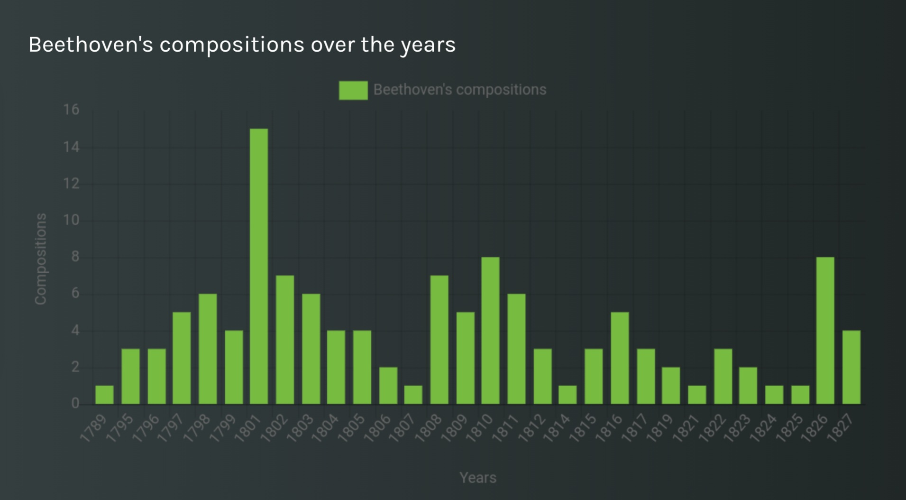

Exploring musical instruments: the piano
The aim of this article is to illustrate our Melody story by looking into the results retrieved from the WikiData knowledge base, which focus on one of the most popular musical instruments: the piano.
To begin with, we will visually display, through the use of templates generated on Melody, some information about this instrument, and then we will briefly focus on the most important information about Ludwig Van Beethoven.
We started our research looking for different types of pianos and we found out that the Wikidata knowledge base identifies 26 types.
Below there is the template of the “count” and, after that, there is a table that shows the names of these 26 types of pianos and the corresponding pictures. Among these, there are also some unique pianos, such as the orphica, which is a portable piano invented in the 18th century. Looking for this particular piano on the web, we also found out that Beethoven, the composer we will focus our attention later on, wrote some compositions for the orphica.
| PianoType | image |
|---|---|
| Q2752967 | |
| prepared piano |  |
| Steinway D-274 |  |
| melopiano | |
| Q105693575 | |
| Steinway B-211 | |
| Q3846212 | http://commons.wikimedia.org/wiki/Special:FilePath/Pianino%20mit%20Selbstspiel-Automatik%20Rollenklavier%20-Museum%20f%C3%BCr%20Kunst%20und%20Gewerbe%20Hamburg-2000.614.tif |
| fortepiano |  |
| hibaku piano |
Then, we used two different tables to show, respectively, some examples of male and female pianists.
| men |
|---|
| Bruce Springsteen |
| Ivory Joe Hunter |
| Joe Zawinul |
| Pyotr Ilyich Tchaikovsky |
| Tim Minchin |
| Andrea Bocelli |
| Dieter Glawischnig |
| Karl Hodina |
| Vladas Jakubėnas |
| Rudolf Friml |
| women |
|---|
| Julia Lee |
| Laura Izibor |
| Fredrika Stahl |
| Marilyn Crispell |
| Valborg Aulin |
| Leopoldine Blahetka |
| Dagny Juel |
| Eunice Norton |
| Tania León |
| Keren Peles |
To give an idea of the number and distribution of pianists around the world, the visualization in the map below is useful.
From the data retrieved, it can be seen that the largest number of pianists is found in Europe, with a greater concentration in the areas between Germany and Austria.
Moreover, the following doughnut chart presents some examples of renowned piano pieces.
The analysis of this chart points out that the majority of these pieces, and in particular the top three on the list, were composed by Beethoven: for this reason, we decided to go into more detail about this musician, giving basic information about his biography and, in particular, his musical career.
Ludwig Van Beethoven
Ludwig van Beethoven was born in Bonn, Germany, in 1770 and he is one of the most appreciated composers in the history of Western classical music. He left a profound legacy through his major compositions. His works span various genres and showcase his creative musical innovations, emotional depth, and intellectual complexity.
He was active in the music field from 1798 to 1827: the table below shows the most important work of the musician and composer.
| Birth | Death | BirthPlace | DeathPlace |
|---|---|---|---|
| 1770 | 1827 | Bonn | Vienna |
| notablework | image |
|---|---|
| Für Elise | http://commons.wikimedia.org/wiki/Special:FilePath/IMSLP11471-Fur%20Elise%2C%20Beethoven%2C%20WoO59.pdf |
| Symphony No. 9 |  |
| Symphony No. 3 |  |
| Symphony No. 5 |  |
| Missa Solemnis |  |
| Violin Sonata No. 9 |  |
| Piano Sonata No. 14 |  |
| Piano Sonata No. 23 |  |
The works listed above are just some examples because, during his career, Beethoven produced an enormous number of musical compositions.
The following bar chart proves useful in showing visually, and thus more immediately, how prolific his production was.
In particular, on the x-axis we find the variable “years”, which runs from 1789 to 1827, while on the y-axis there is the variable “compositions”: it shows the trend of works produced during all those years.

In addition, Beethoven, a prominent figure in the history of classical music mostly known for being a composer and pianist, actually held various occupations throughout his life, beside those two. Here in the table below are some of the key occupations associated with Beethoven:
| label | count |
|---|---|
| composer | 1 |
| conductor | 1 |
| pianist | 1 |
| musicologist | 1 |
| pedagogue | 1 |
Finally, another important piece of information we retrieved from Wikidata, is that his grave is located in the biggest cemetery in Vienna: Vienna Central Cemetery, where other musicians’ graves are located too, such as Schubert’s.
| image |
|---|
 |
Ludwig van Beethoven's legacy as a composer and musician is an indelible mark on the history of Western classical music.
His groundbreaking symphonies, sonatas, concertos, and chamber music compositions have left an enduring impact on the development of classical music. Beyond his compositional ability, Beethoven's artistic vision was fueled by his desire to convey profound human experiences and universal truths through music.
His works encapsulate a wide spectrum of emotions, from despair and anguish to joy and triumph, reflecting the complexities of the human condition.